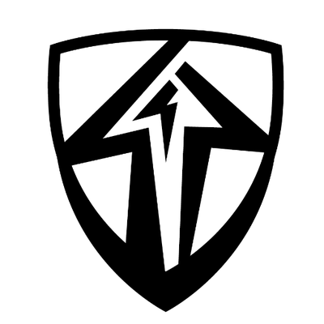
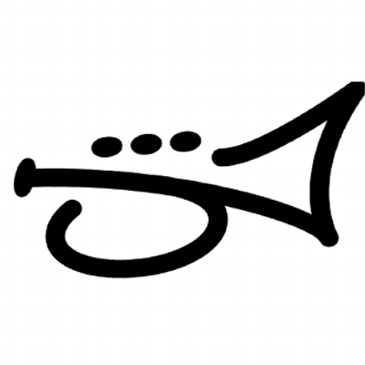
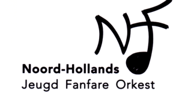

Muziek
Music
Les
Lessons

Instrument: Slagwerk
Instrument: Percussion
Docent: Glenn Liebaut
Teacher: Glenn Liebaut
Organisastie: Muziekschool Gerard Boedijn
Organisation: Music school Gerard Boedijn
Sept. 2018 - nu
Sept. 2018 - now

Instrument: Slagwerk
Instrument: Percussion
Docent: Erwin ter Bogt
Teacher: Erwin ter Bogt
Organisastie: Hoornse Brassband
Organisation: Hoornse Brassband
Maart 2010 - Juli 2016
March 2010 - July 2016
Orkesten
Orchestras

Brassband Kunst naar Kracht
Brassband Kunst naar Kracht
Jan. 2020 - nu
Jan. 2020 - now

Nationaal Jeugd Fanfare Orkest (NJFO)
National Youth Fanfare Orchestra (NJFO)
Sept. 2020 - nu
Sept. 2020 - now

Noord-Hollands Jeugd Fanfare Orkest (NHJFO)
North-Holland Youth Fanfare Orchestra (NHJFO)
Sept. 2018 - Jan. 2020
Sept. 2018 - Jan. 2020